Convolution from scratch
Flipping a kernel, padding an image, and accumulating local products.
The four-loop implementation visits every output pixel and every kernel entry. The two-loop version keeps the loops over image coordinates but uses NumPy to multiply and sum each patch. Both flip the kernel along both axes, so they implement convolution rather than correlation.
A normalized 9 × 9 box filter averages 81 neighboring values. The finite-difference kernels are Dx = [−1, 1] and Dy = [−1, 1]T. The portrait is converted to grayscale before filtering.

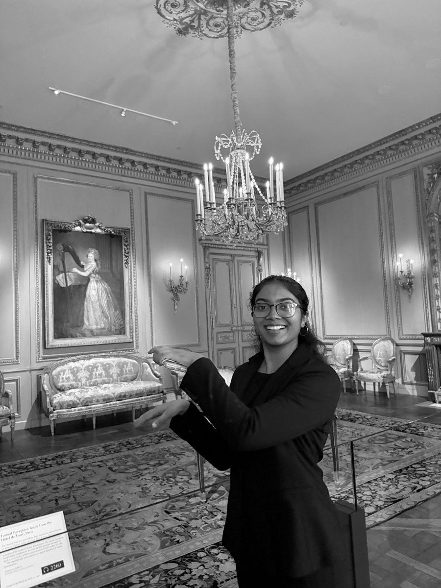


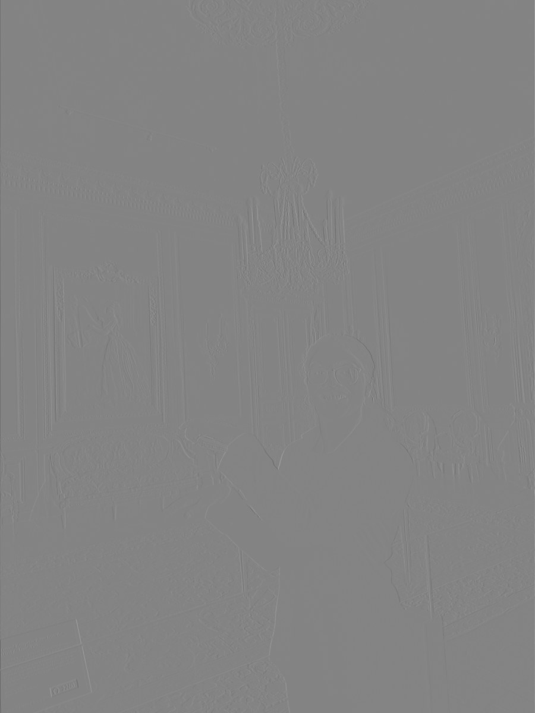

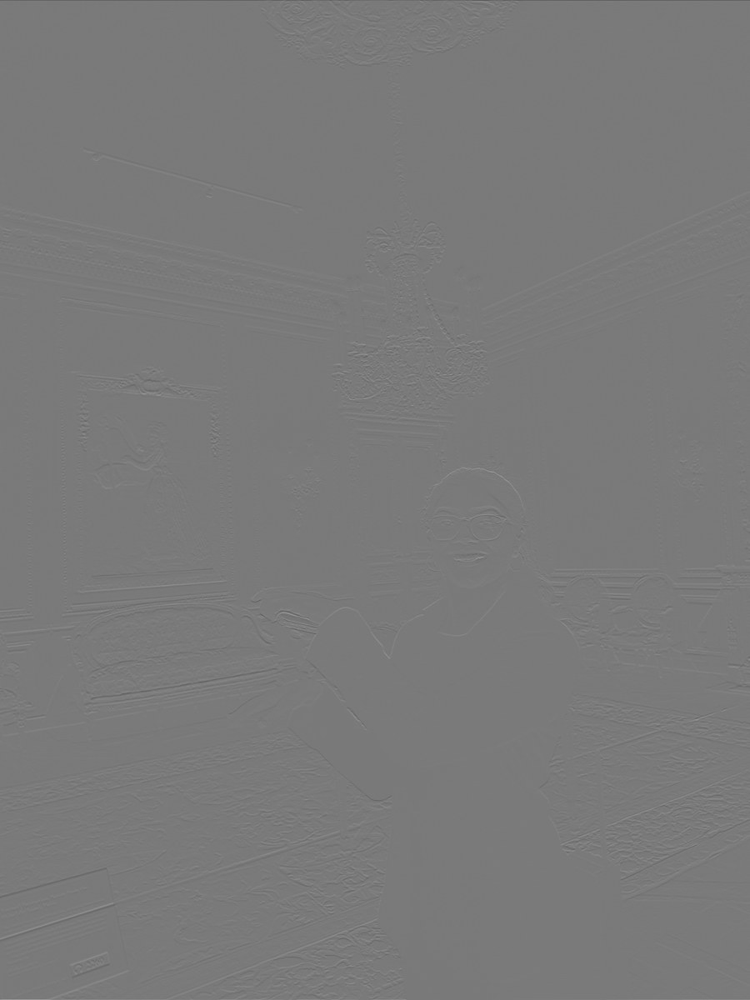
NumPy implementation: padding, four loops, and two loops
def pad_image(img, filter, mode='same'):
fh, fw = filter.shape
ph, pw = fh - 1, fw - 1
if mode == 'same':
ph, pw = fh // 2, fw // 2
return np.pad(img, ((ph, ph), (pw, pw)), mode='constant'), ph, pw
def conv_4loops(img, filter, mode='same'):
flipped = np.flip(filter)
padded, ph, pw = pad_image(img, filter, mode)
out_h, out_w = padded.shape[0] - flipped.shape[0] + 1, padded.shape[1] - flipped.shape[1] + 1
out = np.zeros((out_h, out_w))
for i in range(out_h):
for j in range(out_w):
for fi in range(flipped.shape[0]):
for fj in range(flipped.shape[1]):
out[i, j] += padded[i + fi, j + fj] * flipped[fi, fj]
return out
def conv_2loops(img, filter, mode='same'):
flipped = np.flip(filter)
padded, ph, pw = pad_image(img, filter, mode)
out_h, out_w = padded.shape[0] - flipped.shape[0] + 1, padded.shape[1] - flipped.shape[1] + 1
out = np.zeros((out_h, out_w))
for i in range(out_h):
for j in range(out_w):
out[i, j] = np.sum(padded[i:i+flipped.shape[0], j:j+flipped.shape[1]] * flipped)
return outbox_filter = np.ones((9, 9)) / 81.0
Dx = np.array([[-1, 1]])
Dy = np.array([[-1], [1]])Correctness, runtime, and boundaries
On the same seeded 100 × 100 random image and 5 × 5 kernel, both implementations agree with scipy.signal.convolve2d to floating-point precision. These measurements are the median of three local runs; they exclude image loading and saving.
| Implementation | Median runtime | Maximum absolute error vs. SciPy |
|---|---|---|
| Four loops | 117.60 ms | 4.44e-15 |
| Two loops | 52.02 ms | 3.55e-15 |
| SciPy | 0.58 ms | 0.00e+00 |
The two-loop version avoids Python loops over the kernel, while SciPy’s compiled routine is much faster than either implementation. Both custom implementations still perform O(HWKhKw) arithmetic.
Padding uses zeros, which can darken a blurred image’s border or introduce an artificial edge against the outside. In full mode, padding is kernel size minus one on each side. The current same implementation uses symmetric half-kernel padding: it matches SciPy’s output size for odd kernels, but a two-tap derivative produces one extra row or column. The benchmark above uses an odd kernel; it does not establish equivalence for even-kernel alignment.
Finite differences & edges
Measuring local intensity changes in the cameraman image.
The x derivative emphasizes changes across columns, while the y derivative emphasizes changes across rows. Combining them gives edge strength independent of orientation. I use a threshold of 0.19 on the unscaled magnitude computed from intensities in [0, 1]. This suppresses weaker texture while retaining the strongest subject boundaries, at the cost of losing some faint edges.

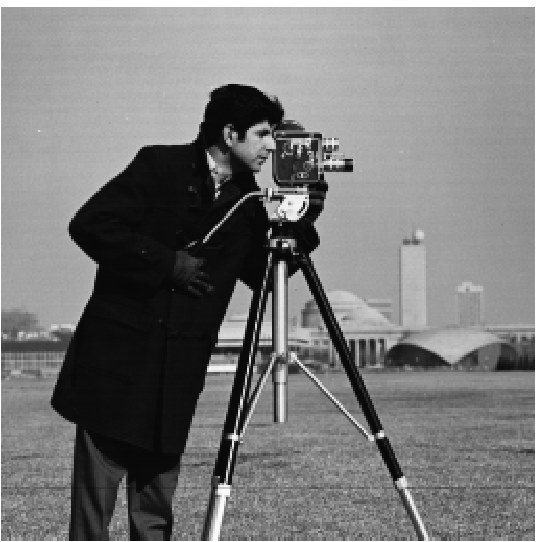

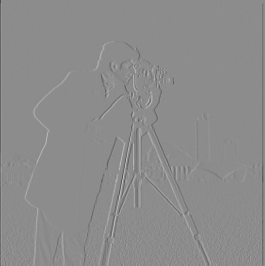

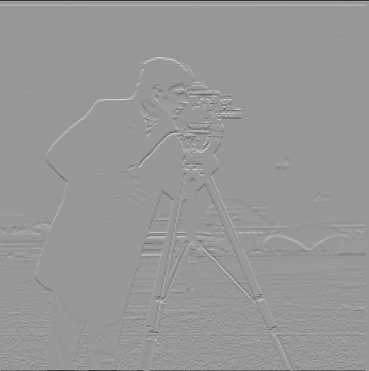

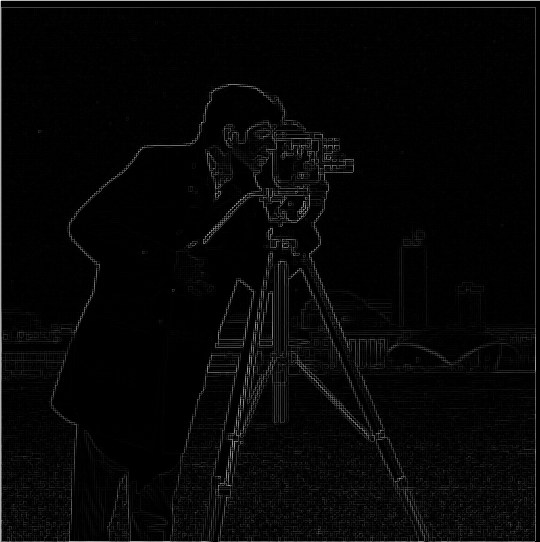

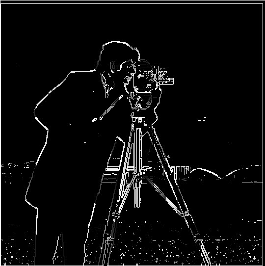
Derivative and magnitude images are scaled for display. Thresholds operate on the underlying arrays, not on these display intensities.
Derivative of Gaussian
Smooth first to reduce texture, then differentiate.
A 15 × 15 Gaussian is formed by taking the outer product of cv2.getGaussianKernel(15, 0) with its transpose; sigma = 0 asks OpenCV to select the width from the kernel size. Smoothing before differentiation removes small intensity fluctuations, producing cleaner but broader edges. Some fine detail is lost along with the noise.


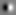

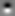

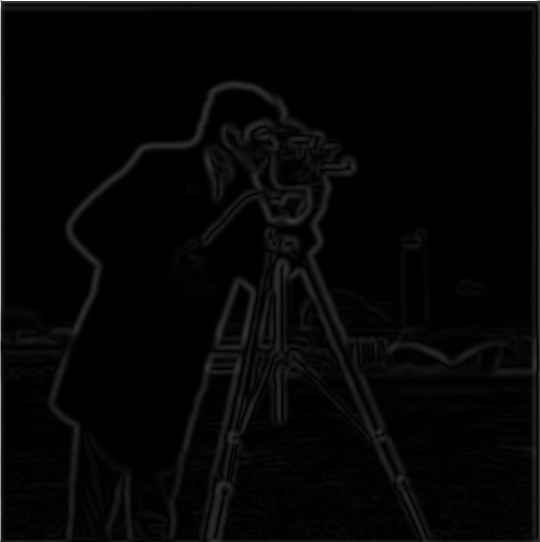

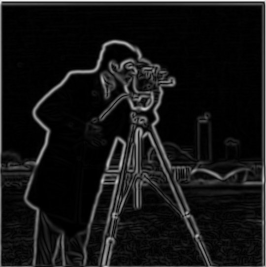

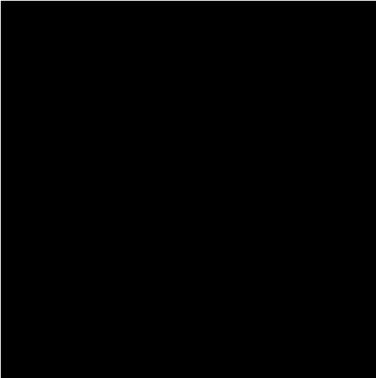

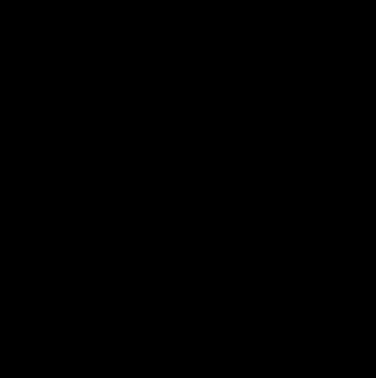
Convolution is associative when the complete support is retained. For this comparison, the composed kernels use mode="full", avoiding truncation of the Gaussian derivative. The two paths agree in the interior after excluding an eight-pixel border: maximum errors are 1.25e-15 in x and 1.37e-15 in y.
They are not identical at the outer border: two successive same convolutions crop an intermediate result before zero-padding it again. The one-step filter sees a different boundary extension. This is a boundary-handling effect, not a failure of associativity.
Code used for the verified comparison
g = cv2.getGaussianKernel(15, 0)
G = g @ g.T
blurred = convolve2d(image, G, mode="same", boundary="fill")
two_step = convolve2d(blurred, Dx, mode="same", boundary="fill")
DoG_x = convolve2d(G, Dx, mode="full")
one_step = convolve2d(image, DoG_x, mode="same", boundary="fill")
np.allclose(two_step[8:-8, 8:-8], one_step[8:-8, 8:-8])The verified comparison above is generated by the report-support script. The earlier 1.3.py composes kernels with “same,” which truncates their support.


Hybrid images
Two sources, separated by spatial frequency.
The first image supplies low frequencies through Gaussian smoothing. The second supplies high frequencies through subtraction of its own blur. Their sum is a hybrid: fine detail is easier to see nearby, while broad structure dominates at a smaller viewing size. Corresponding eye points guide translation, scale, and rotation before filtering.
01 / Derek + Nutmeg


Derek provides the broad portrait structure and Nutmeg supplies the fine fur and facial detail. Alignment makes the faces overlap, although the different head shapes and rotated image boundaries remain visible.
02 / Wolf + husky


This was a less successful pair. Trials included (σ₁, σ₂) = (4, 2), (4, 4), and (4, 8). The (4, 2) combination gave the most promising balance during experimentation, but the husky remained recognizable at both distances. The similar animal faces and strong husky features make the perceptual switch ambiguous; seeing both sources together is not the same as obtaining a clear distance-dependent change.
03 / Jack Black · expression hybrid

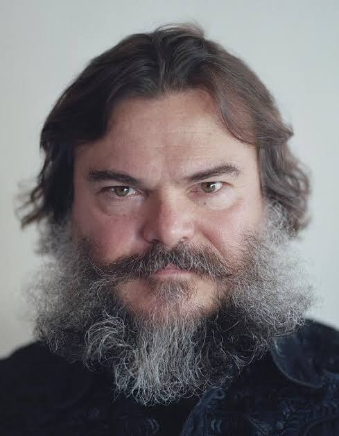

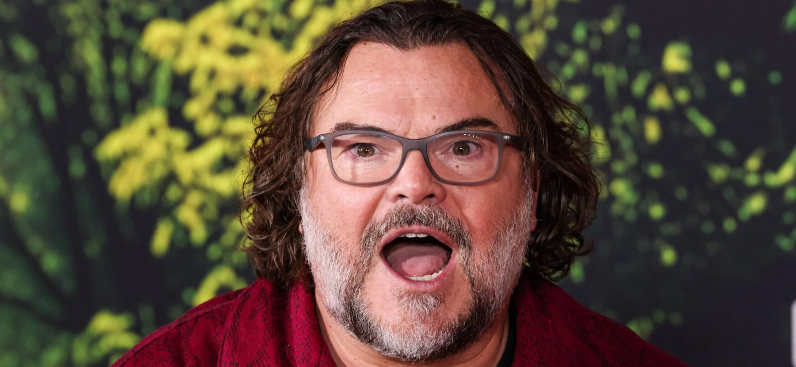

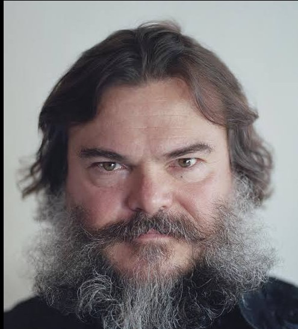

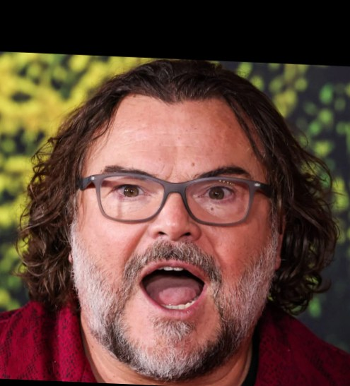
The detailed example uses σ₁ = 8 pixels for the neutral portrait and σ₂ = 2 pixels for the expressive portrait. The stronger low-pass blur suppresses competing fine features in A; the smaller high-pass sigma limits B mostly to finer structure. These are Gaussian scale parameters, not hard frequency cutoffs: larger spatial sigma corresponds to a narrower low-pass frequency response.

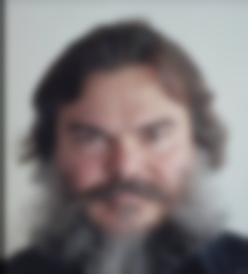

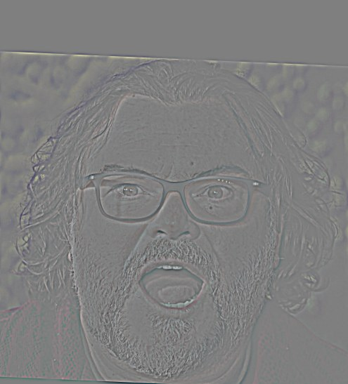
The expression pair is more visually distinct than wolf/husky. The mouth and glasses contribute close-view detail, while the neutral face supplies broad structure. Some ghosting remains because aligning two points cannot make different poses and expressions coincide everywhere.
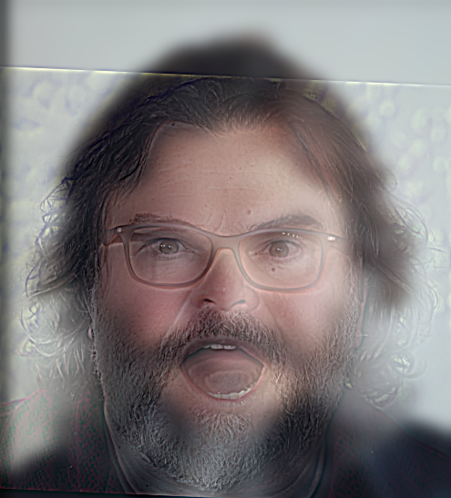
Frequency analysis · five Fourier spectra
RGB channels are averaged to obtain grayscale. The Fourier transform is shifted so zero frequency lies at the center, then its magnitude is shown on a logarithmic scale. A small epsilon avoids log(0). All five spectra below are generated from the same aligned pair and the same (8, 2) filter settings.

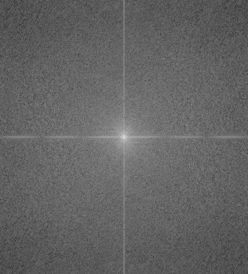

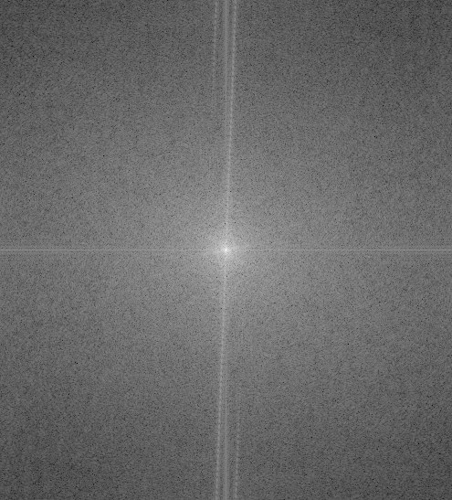

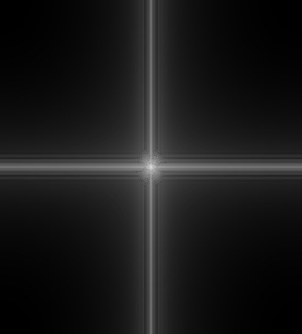

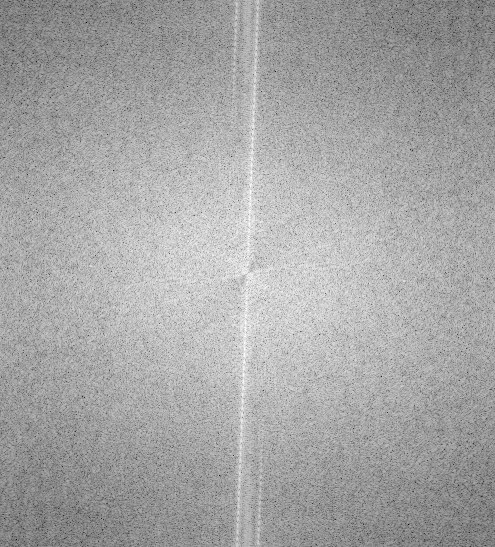

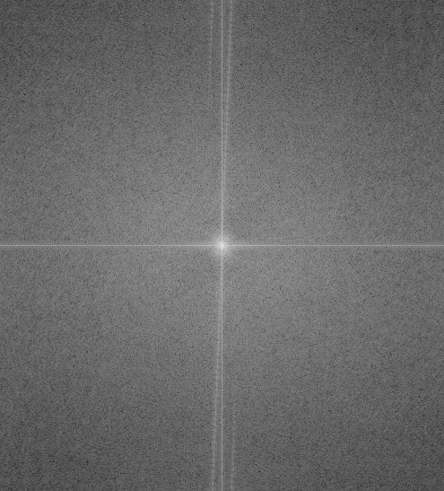
The low-pass spectrum concentrates energy near the center and suppresses outer frequencies. The high-pass spectrum suppresses the central low-frequency content while preserving finer structure. The hybrid combines these contributions; clipping for display can also alter its spectrum. Each spectrum is independently scaled for visibility, so brightness should not be compared as an absolute energy measurement across panels.
gray = np.mean(image, axis=2)
F = np.fft.fftshift(np.fft.fft2(gray))
log_magnitude = np.log(np.maximum(np.abs(F), 1e-8))Gaussian & Laplacian stacks
A full-resolution representation at multiple scales.
Each stack has six levels, all at the original image resolution. Starting from the input, successive Gaussian blurs use σ = 2, 4, 8, 16, and 32 pixels. These are incremental blur widths; repeated Gaussian filtering accumulates smoothing. No downsampling or built-in pyramid functions are used.
L₅ = G₅ · I = Σᵢ Lᵢ
Adjacent Gaussian levels are subtracted to isolate bands of detail. The last level is the low-frequency residual. Summing all five signed detail bands and the residual reconstructs the image. Detail bands are displayed with a 0.5 offset; the residual is shown as an ordinary image.


Apple · Gaussian stack
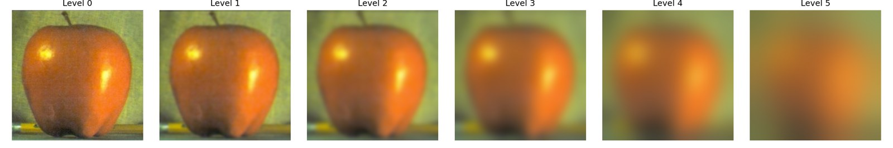
Orange · Gaussian stack
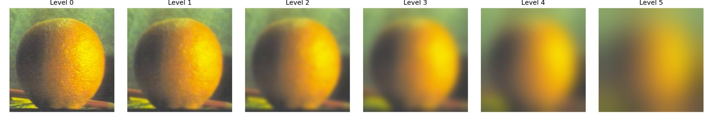
Apple · Laplacian stack + residual
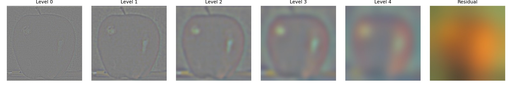
Orange · Laplacian stack + residual
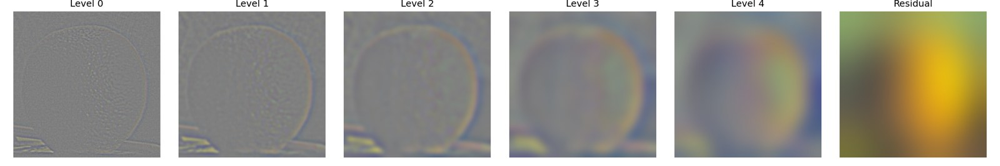
Multiresolution blending
A narrow seam for detail; a gradual transition for broad structure.
A binary mask selects image A where it is white and B where it is black. Blurring that mask into a Gaussian stack creates a different transition width at each frequency scale. Each pair of Laplacian bands is blended with the corresponding mask level, and all blended levels are summed before clipping.
Result = Σᵢ Bᵢ
Fine details cross a relatively narrow transition; coarse brightness and color changes are blended over a broader region. A single hard cut does not provide this scale-dependent transition.
The oraple


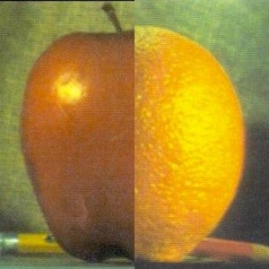
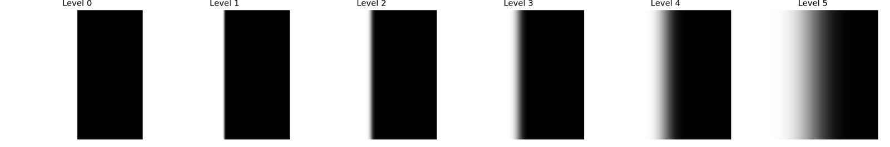
Recreating Figure 3.42 · panels (a)–(l)
Columns show the masked apple contribution, masked orange contribution, and their sum. Rows 1–3 show Laplacian levels 0, 2, and 4, from fine to coarse. The bottom row reconstructs the contributions and final result using all levels, including the residual. Each detail row shares one symmetric display scale across its three panels.

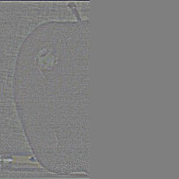

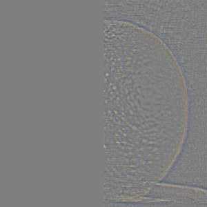

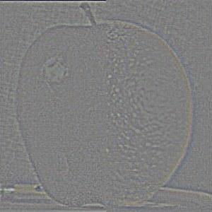

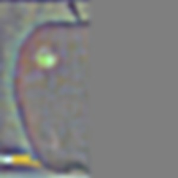

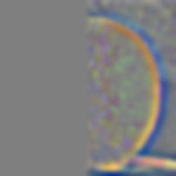


Custom blend 01 / Salt + pepper


The shared shaker shape provides a natural correspondence. Multiresolution blending smooths the transition between the different contents while preserving the glass and lid detail. The mask shown above records the actual orientation used for this result.
Custom blend 02 / RDJ’s smile on Jack Black


The donor’s two eye centers and mouth center are mapped onto the corresponding locations in Jack Black’s portrait with an affine transform. On the 489 × 628 target, the ellipse is centered at (239, 310) with radii (120, 148) pixels. It selects the central facial region while retaining Jack Black’s hair and outer beard. This curved boundary satisfies the irregular-mask requirement.
Alignment is essential: a smooth mask cannot fix misplaced eyes or a mismatched mouth. The multiscale transition softens the join around the forehead and cheeks, although differences in skin tone and facial geometry are still limitations.


What I learned
Filtering changes which information is visible, not just how an image looks.
The most important lesson is that different spatial scales need different treatment. Smoothing makes edge detection less sensitive to texture; sharpening amplifies detail but cannot restore everything lost to blur. Hybrid images depend on both frequency separation and good alignment. For blending, preserving fine detail while smoothing broad transitions produces a more convincing seam than treating every frequency the same way.
The wolf/husky experiment also showed that parameter tuning cannot always rescue a poorly differentiated pair. Image choice and geometric alignment matter as much as the filter.
Code & reproducibility
Existing results are preserved. The report-support script records the local convolution benchmark, generates the full-support DoG comparison, and regenerates the detailed hybrid and its spectra from saved aligned inputs. Click any figure to inspect its full-size source.
Assignment: CS180 Project 2 · Fun with Filters and Frequencies. Hybrid-image starter code and sample images are supplied by the course; apple/orange blending follows the course’s multiresolution-blending exercise. This report covers the required CS180 sections, without claiming the optional bells and whistles.